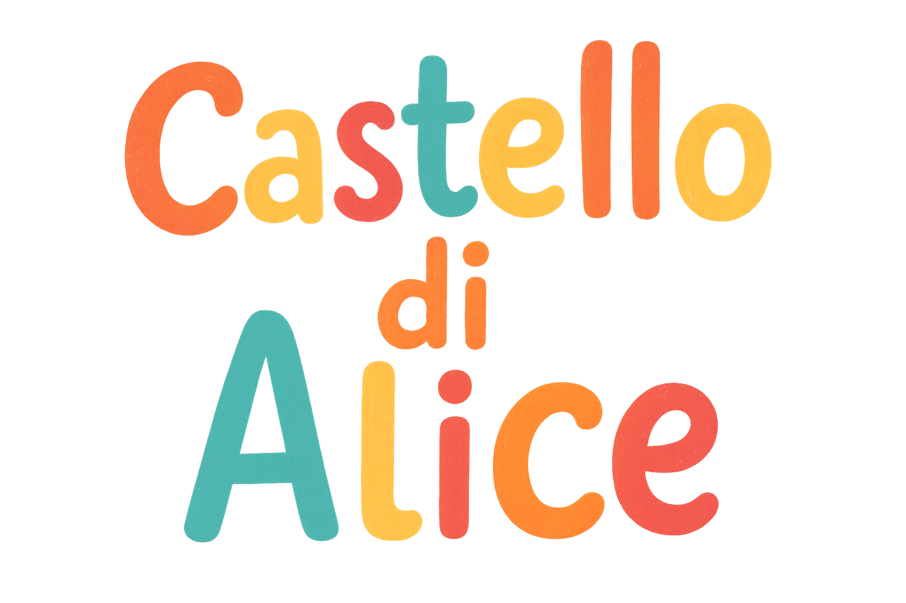

Al Castello di Alice a Ponte a Moriano (Lucca) potete organizzare
compleanni e feste per i vostri bambini. Il parco divertimenti Il
Castello di Alice mette a disposizione tre salette: Castello, Arcobaleno
e Bosco Incantato. Le salette hanno pareti dipinte a mano con i
personaggi dei vostri cartoni animati preferiti, sono molto luminose ed
attrezzate con tutti i comfort. Inoltre è possibile scegliere tra i
nostri menù che includono anche il servizio di apparecchiatura e inviti
personalizzati. Per assicurarsi il divertimento dei bambini, il parco
divertimenti organizza anche l'animazione con dei veri professionisti:
Il Mago ed il Truccabimbo, spettacoli di magia e artisti di strada.